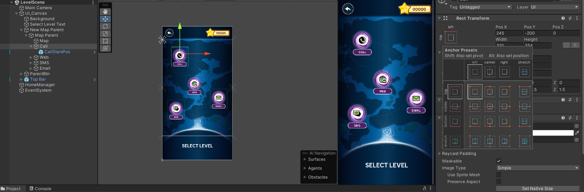

After importing the designs into Unity, I ensured all UI assets were properly scaled across devices by setting the pivot point to support different mobile aspect ratios.

Next, I focused on gameplay scripting. I developed
a reusable C# script to handle the core
“Real vs Scam” gameplay mechanics. Although each level presents different content types (e.g., email, phone calls, SMS), the underlying interaction logic is the same.
By having this reusable script, it allowed consistent behavior across scenes and made the system easy to extend to new levels.
Below displays the script.
After the core gameplay mechanics were in place, I proposed adding an additional
quiz component to deepen player engagement. This new section uses
scenario-based questions to test users’ knowledge and awareness of scams.
Below is the script for the quiz system, designed with
replayability in mind by generating a randomized set of questions in a different order each time the game is played.